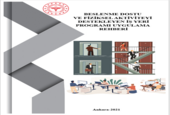
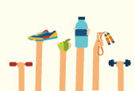
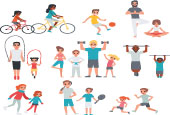
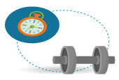
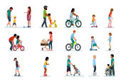
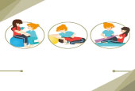
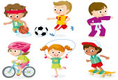
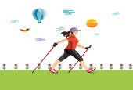

T.C Ministry of Health
HSGM Homepage
Facebook
Twitter
Google +
Instagram
Homepage
Presidency
Publication
News
F.A.Q
Contact

Beslenme Dostu
Ve Fiziksel Aktiviteyi
Destekleyen İş Yeri
Programı Uygulaması

Fiziksel Aktivite

Fiziksel Aktivite Nedir ?

Fiziksel Aktivite
Ne Kadar Yapılmalı
Fiziksel Aktivite
Neden önemli?

Yaş Gruplarında
Fiziksel Aktivite

Hastalıklarda Fiziksel
Aktivite
Okullarda Fiziksel
Aktivite
Engellilerde Fiziksel
Aktivite
Yolculukta Egzersiz
Programı
Masabaşı Egzersiz

İlköğretim Çağı Çoçukları
İçin Egzersiz Programı
3-6 Yaş Grubu
Egzersiz Programı

3-4 Ekim Dünya
Yürüyüş Günü
10 Mayıs Sağlık
İçin Haraket Günü
Ülkemizde Durum